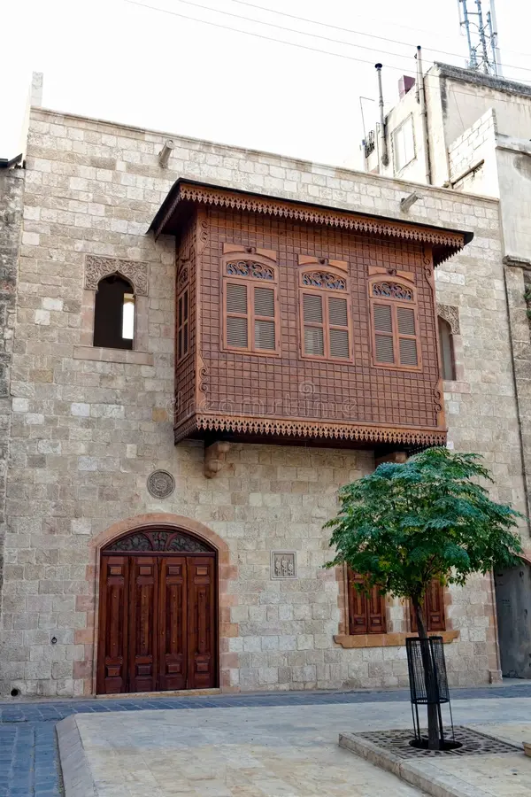
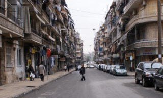
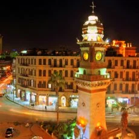

Multimédia
Nesta página encontra conteúdos multimédia sobre Alepo.
Alepo: cada pedra conta uma história.
Alepo em movimento
Fotografias







Vídeo
Alepo, uma cidade de histórias
Poesia
Alepo guarda histórias nas suas ruas,
Entre pedras antigas e manhãs azuis.
O vento leva memórias pela cidade,
E cada esquina fala de saudade.